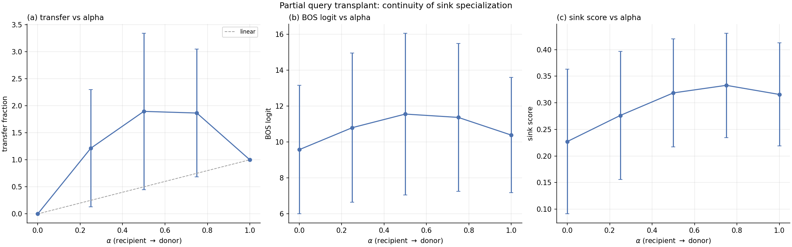
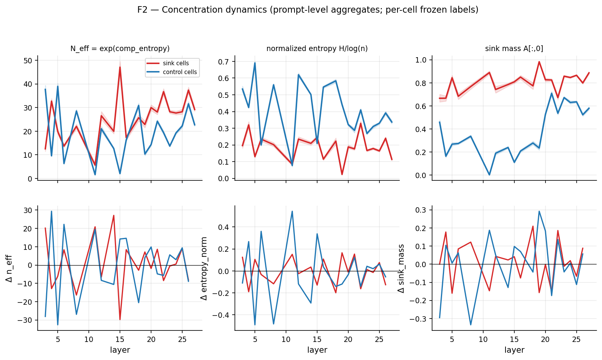
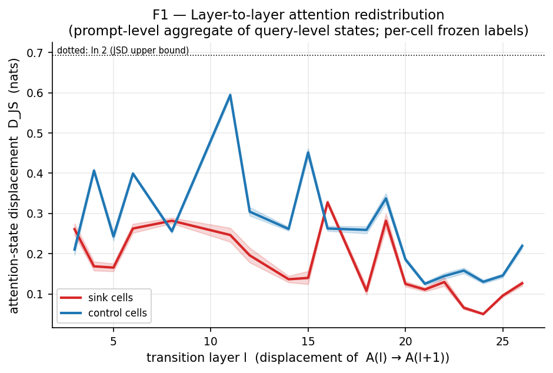
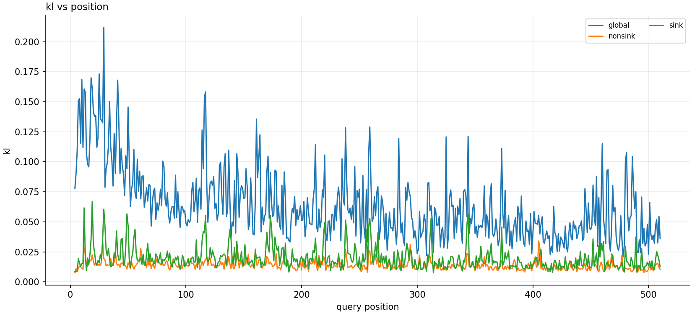
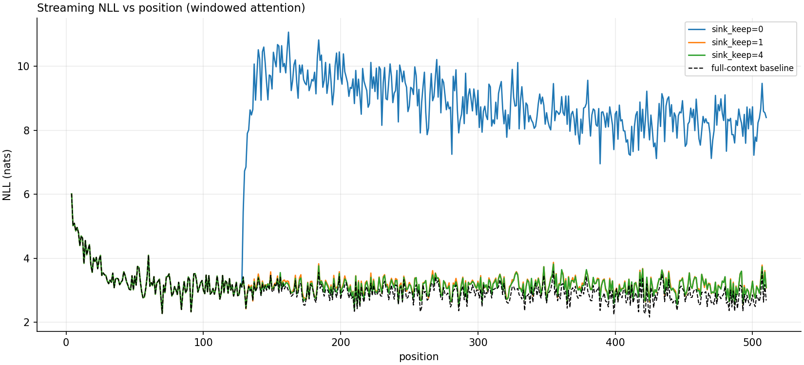
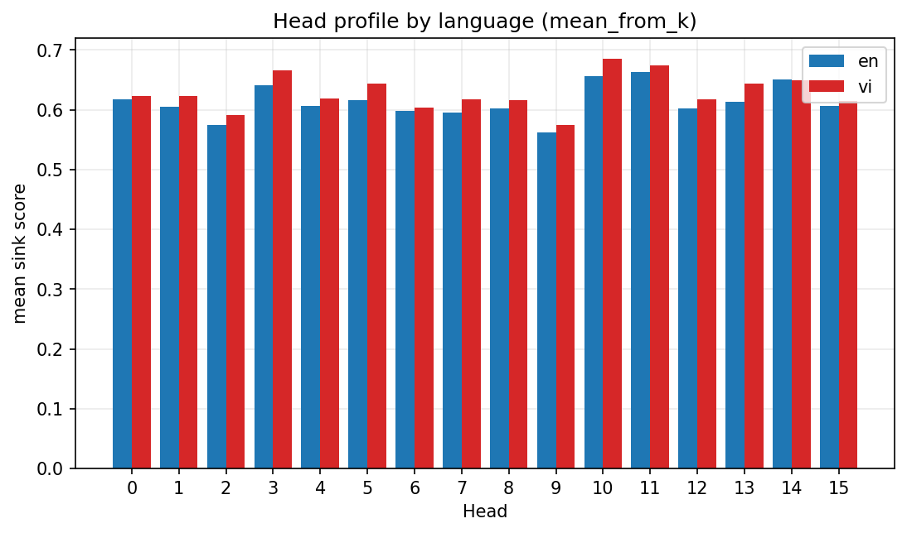
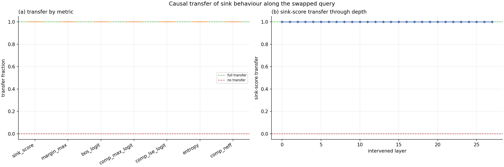
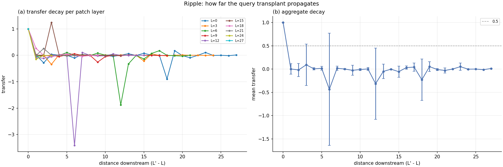

(01) Cause
Query transplants
I exploited the shared key/value structure of GQA to isolate the query pathway, and tested whether fully or partially transplanting one head’s query transfers its sink behaviour to another.
(02) Individual research · Interpretability
Query-Side Attribution, Layer-Wise Dynamics, and Regime-Dependent Function
Pham Ha Khanh Chi
Some attention heads pour most of their attention onto the very first token, an “attention sink”. I asked why particular heads become sinks, using Qwen3’s grouped-query attention as a natural experiment, and found that the query pathway is a causal contributor to which heads sink.
This project grew out of my own reading on how transformers work. I started with attention, the part that felt most unfamiliar: the mechanism where each token decides which previous tokens are worth “paying attention to”, using queries (what the token is looking for), keys (what earlier tokens offer) and values (the information they pass on).
Reading A Mathematical Framework for Transformer Circuits was enlightening: attention is the only component that moves information between positions, and it decomposes into a QK circuit that decides where to attend and an OV circuit that decides what to write. Later, I read Efficient Streaming Language Models with Attention Sinks, and wanted to stop reading about the phenomenon and see it for myself. I chose Qwen3-1.7B, a model small enough to run on my own computer, but large enough to show real attention sinks.
Once I could load the model and plot its attention, I realised the interesting question was not that a sink exists but why particular heads become sinks. Several mechanisms have been proposed (key-side biases, softmax-normalisation effects, architecture-specific circuits), but how head-specific sink specialisation arises in models with shared key/value representations is less understood.
Qwen3’s grouped-query attention turned out to be a natural experiment for exactly this. Within a group, several query heads share the same keys and values, so if two such heads sink differently, the difference has to come from their queries. That controlled structure let me ask a clear, sharp question I could answer, instead of a more abstract question about attention in general.
I approached the sink from three angles.
(01) Cause
I exploited the shared key/value structure of GQA to isolate the query pathway, and tested whether fully or partially transplanting one head’s query transfers its sink behaviour to another.
(02) Depth
I treated each head’s sink not as a fixed score but as a trajectory across depth, tracking how attention concentration, redistribution and predictability evolve layer by layer, with matched control heads throughout.
(03) Function
I perturbed sink attention under both full-context and windowed (streaming) attention, to separate whether the sink is used locally from whether it is structurally necessary at long range.
The query pathway matters. Query-side interventions transfer sink behaviour within a GQA group, identifying the query pathway as a causal contributor to within-group sink specialisation.

Sinks form early, then settle. Across depth, the sink emerges early and strengthens gradually, after which sink heads redistribute their attention comparatively little and their trajectories decelerate.


Whether it matters depends on the regime. Removing sink attention barely affects full-context next-token prediction, yet under windowed attention, retaining just one sink token is enough to restore performance.


Together these suggest the attention sink is better understood as a head-specific, layer-evolving routing phenomenon whose causes and consequences depend on the architecture and the attention regime.
The project began much broader: I set out to compare how attention handles Vietnamese and English tokenisation, but the near-identical sink behaviour in both redirected me. If the behaviour was the same, the real question was the mechanism building it. That taught me the habit this project is built on: not to stop at what a model does, but to look at its inside parts, variables and architecture. Reading into Qwen’s GQA this way revealed the natural experiment that let me turn a vague interest into a specific, testable claim about the query pathway.

It also taught me to be suspicious of my own results. My query transplant first showed perfect transfer, but looking at how I had set up the experiment made me realise the result was forced by construction, so it could not establish causality. This pushed me to design the ripple and partial-transplant controls, to produce evidence that was not guaranteed by construction.


The process taught me to form hypotheses, design experiments and interpret results, and it prepared me to investigate how local mechanisms give rise to wider model behaviour.